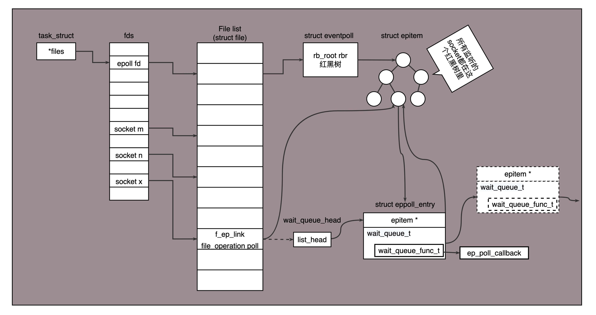

- 00 开篇词 想成为技术牛人？先搞定网络协议！.md
- 01 为什么要学习网络协议？.md
- 02 网络分层的真实含义是什么？.md
- 03 ifconfig：最熟悉又陌生的命令行.md
- 04 DHCP与PXE：IP是怎么来的，又是怎么没的？.md
- 05 从物理层到MAC层：如何在宿舍里自己组网玩联机游戏？.md
- 06 交换机与VLAN：办公室太复杂，我要回学校.md
- 07 ICMP与ping：投石问路的侦察兵.md
- 08 世界这么大，我想出网关：欧洲十国游与玄奘西行.md
- 09 路由协议：西出网关无故人，敢问路在何方.md
- 10 UDP协议：因性善而简单，难免碰到“城会玩”.md
- 11 TCP协议（上）：因性恶而复杂，先恶后善反轻松.md
- 12 TCP协议（下）：西行必定多妖孽，恒心智慧消磨难.md
- 13 套接字Socket：Talk is cheap, show me the code.md
- 14 HTTP协议：看个新闻原来这么麻烦.md
- 15 HTTPS协议：点外卖的过程原来这么复杂.md
- 16 流媒体协议：如何在直播里看到美女帅哥？.md
- 17 P2P协议：我下小电影，99%急死你.md
- 18 DNS协议：网络世界的地址簿.md
- 19 HttpDNS：网络世界的地址簿也会指错路.md
- 20 CDN：你去小卖部取过快递么？.md
- 21 数据中心：我是开发商，自己拿地盖别墅.md
- 22 VPN：朝中有人好做官.md
- 23 移动网络：去巴塞罗那，手机也上不了脸书.md
- 24 云中网络：自己拿地成本高，购买公寓更灵活.md
- 25 软件定义网络：共享基础设施的小区物业管理办法.md
- 26 云中的网络安全：虽然不是土豪，也需要基本安全和保障.md
- 27 云中的网络QoS：邻居疯狂下电影，我该怎么办？.md
- 28 云中网络的隔离GRE、VXLAN：虽然住一个小区，也要保护隐私.md
- 29 容器网络：来去自由的日子，不买公寓去合租.md
- 30 容器网络之Flannel：每人一亩三分地.md
- 31 容器网络之Calico：为高效说出善意的谎言.md
- 32 RPC协议综述：远在天边，近在眼前.md
- 33 基于XML的SOAP协议：不要说NBA，请说美国职业篮球联赛.md
- 34 基于JSON的RESTful接口协议：我不关心过程，请给我结果.md
- 35 二进制类RPC协议：还是叫NBA吧，总说全称多费劲.md
- 36 跨语言类RPC协议：交流之前，双方先来个专业术语表.md
- 37 知识串：用双十一的故事串起碎片的网络协议（上）.md
- 38 知识串：用双十一的故事串起碎片的网络协议（中）.md
- 39 知识串：用双十一的故事串起碎片的网络协议（下）.md
- 40 搭建一个网络实验环境：授人以鱼不如授人以渔.md
- 加餐1 创作故事：我是如何创作“趣谈网络协议”专栏的？.md
- 协议专栏特别福利 答疑解惑1期.md
- 协议专栏特别福利 答疑解惑2期.md
- 协议专栏特别福利 答疑解惑3期.md
- 协议专栏特别福利 答疑解惑4期.md
- 协议专栏特别福利 答疑解惑5期.md
- 结束语 放弃完美主义，执行力就是限时限量认真完成.md
13 套接字Socket：Talk is cheap, show me the code
前面讲完了TCP和UDP协议，还没有上手过，这一节咱们讲讲基于TCP和UDP协议的Socket编程。
在讲TCP和UDP协议的时候，我们分客户端和服务端，在写程序的时候，我们也同样这样分。
Socket这个名字很有意思，可以作插口或者插槽讲。虽然我们是写软件程序，但是你可以想象为弄一根网线，一头插在客户端，一头插在服务端，然后进行通信。所以在通信之前，双方都要建立一个Socket。
在建立Socket的时候，应该设置什么参数呢？Socket编程进行的是端到端的通信，往往意识不到中间经过多少局域网，多少路由器，因而能够设置的参数，也只能是端到端协议之上网络层和传输层的。
在网络层，Socket函数需要指定到底是IPv4还是IPv6，分别对应设置为AF_INET和AF_INET6。另外，还要指定到底是TCP还是UDP。还记得咱们前面讲过的，TCP协议是基于数据流的，所以设置为SOCK_STREAM，而UDP是基于数据报的，因而设置为SOCK_DGRAM。
基于TCP协议的Socket程序函数调用过程
两端创建了Socket之后，接下来的过程中，TCP和UDP稍有不同，我们先来看TCP。
TCP的服务端要先监听一个端口，一般是先调用bind函数，给这个Socket赋予一个IP地址和端口。为什么需要端口呢？要知道，你写的是一个应用程序，当一个网络包来的时候，内核要通过TCP头里面的这个端口，来找到你这个应用程序，把包给你。为什么要IP地址呢？有时候，一台机器会有多个网卡，也就会有多个IP地址，你可以选择监听所有的网卡，也可以选择监听一个网卡，这样，只有发给这个网卡的包，才会给你。
当服务端有了IP和端口号，就可以调用listen函数进行监听。在TCP的状态图里面，有一个listen状态，当调用这个函数之后，服务端就进入了这个状态，这个时候客户端就可以发起连接了。
在内核中，为每个Socket维护两个队列。一个是已经建立了连接的队列，这时候连接三次握手已经完毕，处于established状态；一个是还没有完全建立连接的队列，这个时候三次握手还没完成，处于syn_rcvd的状态。
接下来，服务端调用accept函数，拿出一个已经完成的连接进行处理。如果还没有完成，就要等着。
在服务端等待的时候，客户端可以通过connect函数发起连接。先在参数中指明要连接的IP地址和端口号，然后开始发起三次握手。内核会给客户端分配一个临时的端口。一旦握手成功，服务端的accept就会返回另一个Socket。
这是一个经常考的知识点，就是监听的Socket和真正用来传数据的Socket是两个，一个叫作监听Socket，一个叫作已连接Socket。
连接建立成功之后，双方开始通过read和write函数来读写数据，就像往一个文件流里面写东西一样。
这个图就是基于TCP协议的Socket程序函数调用过程。

说TCP的Socket就是一个文件流，是非常准确的。因为，Socket在Linux中就是以文件的形式存在的。除此之外，还存在文件描述符。写入和读出，也是通过文件描述符。
在内核中，Socket是一个文件，那对应就有文件描述符。每一个进程都有一个数据结构task_struct，里面指向一个文件描述符数组，来列出这个进程打开的所有文件的文件描述符。文件描述符是一个整数，是这个数组的下标。
这个数组中的内容是一个指针，指向内核中所有打开的文件的列表。既然是一个文件，就会有一个inode，只不过Socket对应的inode不像真正的文件系统一样，保存在硬盘上的，而是在内存中的。在这个inode中，指向了Socket在内核中的Socket结构。
在这个结构里面，主要的是两个队列，一个是发送队列，一个是接收队列。在这两个队列里面保存的是一个缓存sk_buff。这个缓存里面能够看到完整的包的结构。看到这个，是不是能和前面讲过的收发包的场景联系起来了？
整个数据结构我也画了一张图。-

基于UDP协议的Socket程序函数调用过程
对于UDP来讲，过程有些不一样。UDP是没有连接的，所以不需要三次握手，也就不需要调用listen和connect，但是，UDP的交互仍然需要IP和端口号，因而也需要bind。UDP是没有维护连接状态的，因而不需要每对连接建立一组Socket，而是只要有一个Socket，就能够和多个客户端通信。也正是因为没有连接状态，每次通信的时候，都调用sendto和recvfrom，都可以传入IP地址和端口。
这个图的内容就是基于UDP协议的Socket程序函数调用过程。-

服务器如何接更多的项目？
会了这几个基本的Socket函数之后，你就可以轻松地写一个网络交互的程序了。就像上面的过程一样，在建立连接后，进行一个while循环。客户端发了收，服务端收了发。
当然这只是万里长征的第一步，因为如果使用这种方法，基本上只能一对一沟通。如果你是一个服务器，同时只能服务一个客户，肯定是不行的。这就相当于老板成立一个公司，只有自己一个人，自己亲自上来服务客户，只能干完了一家再干下一家，这样赚不来多少钱。
那作为老板你就要想了，我最多能接多少项目呢？当然是越多越好。
我们先来算一下理论值，也就是最大连接数，系统会用一个四元组来标识一个TCP连接。
{本机IP, 本机端口, 对端IP, 对端端口}
服务器通常固定在某个本地端口上监听，等待客户端的连接请求。因此，服务端端TCP连接四元组中只有对端IP, 也就是客户端的IP和对端的端口，也即客户端的端口是可变的，因此，最大TCP连接数=客户端IP数×客户端端口数。对IPv4，客户端的IP数最多为2的32次方，客户端的端口数最多为2的16次方，也就是服务端单机最大TCP连接数，约为2的48次方。
当然，服务端最大并发TCP连接数远不能达到理论上限。首先主要是文件描述符限制，按照上面的原理，Socket都是文件，所以首先要通过ulimit配置文件描述符的数目；另一个限制是内存，按上面的数据结构，每个TCP连接都要占用一定内存，操作系统是有限的。
所以，作为老板，在资源有限的情况下，要想接更多的项目，就需要降低每个项目消耗的资源数目。
方式一：将项目外包给其他公司（多进程方式）
这就相当于你是一个代理，在那里监听来的请求。一旦建立了一个连接，就会有一个已连接Socket，这时候你可以创建一个子进程，然后将基于已连接Socket的交互交给这个新的子进程来做。就像来了一个新的项目，但是项目不一定是你自己做，可以再注册一家子公司，招点人，然后把项目转包给这家子公司做，以后对接就交给这家子公司了，你又可以去接新的项目了。
这里有一个问题是，如何创建子公司，并如何将项目移交给子公司呢？
在Linux下，创建子进程使用fork函数。通过名字可以看出，这是在父进程的基础上完全拷贝一个子进程。在Linux内核中，会复制文件描述符的列表，也会复制内存空间，还会复制一条记录当前执行到了哪一行程序的进程。显然，复制的时候在调用fork，复制完毕之后，父进程和子进程都会记录当前刚刚执行完fork。这两个进程刚复制完的时候，几乎一模一样，只是根据fork的返回值来区分到底是父进程，还是子进程。如果返回值是0，则是子进程；如果返回值是其他的整数，就是父进程。
进程复制过程我画在这里。-
因为复制了文件描述符列表，而文件描述符都是指向整个内核统一的打开文件列表的，因而父进程刚才因为accept创建的已连接Socket也是一个文件描述符，同样也会被子进程获得。
接下来，子进程就可以通过这个已连接Socket和客户端进行互通了，当通信完毕之后，就可以退出进程，那父进程如何知道子进程干完了项目，要退出呢？还记得fork返回的时候，如果是整数就是父进程吗？这个整数就是子进程的ID，父进程可以通过这个ID查看子进程是否完成项目，是否需要退出。
方式二：将项目转包给独立的项目组（多线程方式）
上面这种方式你应该也能发现问题，如果每次接一个项目，都申请一个新公司，然后干完了，就注销掉这个公司，实在是太麻烦了。毕竟一个新公司要有新公司的资产，有新的办公家具，每次都买了再卖，不划算。
于是你应该想到了，我们可以使用线程。相比于进程来讲，这样要轻量级的多。如果创建进程相当于成立新公司，购买新办公家具，而创建线程，就相当于在同一个公司成立项目组。一个项目做完了，那这个项目组就可以解散，组成另外的项目组，办公家具可以共用。
在Linux下，通过pthread_create创建一个线程，也是调用do_fork。不同的是，虽然新的线程在task列表会新创建一项，但是很多资源，例如文件描述符列表、进程空间，还是共享的，只不过多了一个引用而已。

新的线程也可以通过已连接Socket处理请求，从而达到并发处理的目的。
上面基于进程或者线程模型的，其实还是有问题的。新到来一个TCP连接，就需要分配一个进程或者线程。一台机器无法创建很多进程或者线程。有个C10K，它的意思是一台机器要维护1万个连接，就要创建1万个进程或者线程，那么操作系统是无法承受的。如果维持1亿用户在线需要10万台服务器，成本也太高了。
其实C10K问题就是，你接项目接的太多了，如果每个项目都成立单独的项目组，就要招聘10万人，你肯定养不起，那怎么办呢？
方式三：一个项目组支撑多个项目（IO多路复用，一个线程维护多个Socket）
当然，一个项目组可以看多个项目了。这个时候，每个项目组都应该有个项目进度墙，将自己组看的项目列在那里，然后每天通过项目墙看每个项目的进度，一旦某个项目有了进展，就派人去盯一下。
由于Socket是文件描述符，因而某个线程盯的所有的Socket，都放在一个文件描述符集合fd_set中，这就是项目进度墙，然后调用select函数来监听文件描述符集合是否有变化。一旦有变化，就会依次查看每个文件描述符。那些发生变化的文件描述符在fd_set对应的位都设为1，表示Socket可读或者可写，从而可以进行读写操作，然后再调用select，接着盯着下一轮的变化。
方式四：一个项目组支撑多个项目（IO多路复用，从“派人盯着”到“有事通知”）
上面select函数还是有问题的，因为每次Socket所在的文件描述符集合中有Socket发生变化的时候，都需要通过轮询的方式，也就是需要将全部项目都过一遍的方式来查看进度，这大大影响了一个项目组能够支撑的最大的项目数量。因而使用select，能够同时盯的项目数量由FD_SETSIZE限制。
如果改成事件通知的方式，情况就会好很多，项目组不需要通过轮询挨个盯着这些项目，而是当项目进度发生变化的时候，主动通知项目组，然后项目组再根据项目进展情况做相应的操作。
能完成这件事情的函数叫epoll，它在内核中的实现不是通过轮询的方式，而是通过注册callback函数的方式，当某个文件描述符发送变化的时候，就会主动通知。- 
如图所示，假设进程打开了Socket m, n, x等多个文件描述符，现在需要通过epoll来监听是否这些Socket都有事件发生。其中epoll_create创建一个epoll对象，也是一个文件，也对应一个文件描述符，同样也对应着打开文件列表中的一项。在这项里面有一个红黑树，在红黑树里，要保存这个epoll要监听的所有Socket。
当epoll_ctl添加一个Socket的时候，其实是加入这个红黑树，同时红黑树里面的节点指向一个结构，将这个结构挂在被监听的Socket的事件列表中。当一个Socket来了一个事件的时候，可以从这个列表中得到epoll对象，并调用call back通知它。
这种通知方式使得监听的Socket数据增加的时候，效率不会大幅度降低，能够同时监听的Socket的数目也非常的多了。上限就为系统定义的、进程打开的最大文件描述符个数。因而，epoll被称为解决C10K问题的利器。
小结
好了，这一节就到这里了，我们来总结一下：
-
你需要记住TCP和UDP的Socket的编程中，客户端和服务端都需要调用哪些函数；
-
写一个能够支撑大量连接的高并发的服务端不容易，需要多进程、多线程，而epoll机制能解决C10K问题。
最后，给你留两个思考题：
-
epoll是Linux上的函数，那你知道Windows上对应的机制是什么吗？如果想实现一个跨平台的程序，你知道应该怎么办吗？
-
自己写Socket还是挺复杂的，写个HTTP的应用可能简单一些。那你知道HTTP的工作机制吗？
欢迎你留言和我讨论。趣谈网络协议，我们下期见！
© 2019 - 2023 Liangliang Lee. Powered by Vert.x and hexo-theme-book.